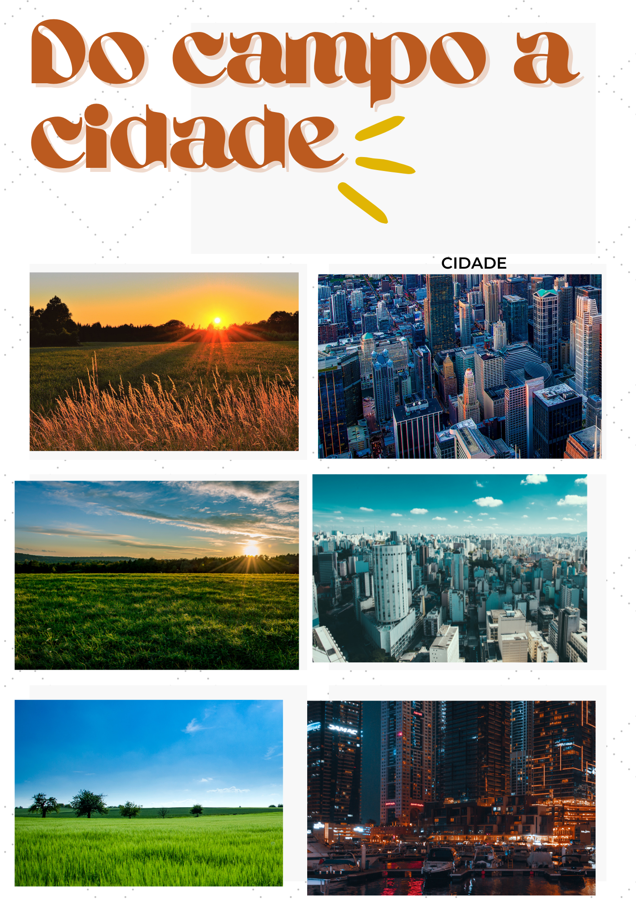

Do campo a cidade
O movimento do campo à cidade, historicamente marcado pela busca de melhores condições de vida e novas oportunidades, tem se intensificado nas últimas décadas, impulsionado por avanços tecnológicos significativos. A agricultura de precisão emerge como um paradigma inovador, oferecendo soluções sustentáveis e eficientes para a produção agrícola, transformando o campo em um ambiente de alta tecnologia que atrai investimentos e cria novas perspectivas de desenvolvimento.
A agricultura de precisão é um conjunto de práticas agrícolas que utilizam tecnologias avançadas para monitorar e otimizar o uso de recursos, como água, fertilizantes e pesticidas. Essas tecnologias incluem sensores, drones, imagens de satélite e sistemas de informação geográfica (SIG), que permitem aos agricultores tomar decisões baseadas em dados precisos e em tempo real. Essa abordagem não apenas aumenta a produtividade, mas também reduz os impactos ambientais, promovendo uma agricultura mais sustentável.
